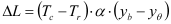
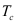
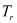
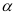
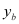
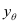

|
|
|


箱体温度
与热膨胀系数一起使用时，箱体温度会导致所有轴承支承点产生整体位移。它还会影响滚动轴承的工作游隙。
假定轴承的外圈与箱体具有相同的温度，并且轴承的内圈与内轴也具有相同的温度。
注意
如果您想考察热膨胀的影响，请考虑轴承的轴向刚度。否则，载荷峰值会过高。
箱体参考点
轴承支承点因箱体热膨胀而产生位移的参考点。例如，如果 yθ = 0，则意味着所有热膨胀均相对于全局参考坐标系来考虑。
施加于轴承外圈的热膨胀量由 ΔL 给出，其中


是箱体温度
是参考温度
是箱体材料的热膨胀系数
是轴承的全局轴向坐标（相对于全局参考坐标系，而非轴）
是用于执行计算的箱体温度热参考点例如，如果 yθ = 0，则意味着所有热膨胀均相对于全局参考坐标系来考虑。
Housing temperature
When used together with the thermal expansion coefficient, the housing temperature causes a general displacement of all the bearing points. It also affects the operating clearance of rolling bearings.
It is assumed that the bearing's outer ring and the housing or the outer ring have the same temperature and that the bearing's inner ring and the inner shaft also have the same temperature.
Note
Take the axial stiffness of the bearings into account if you want to examine the influence of thermal expansions. Otherwise, the load peaks will be too high.
Reference point housing
Reference point for the displacement of bearing points due to the thermal expansion of the housing. For example, if yθ = 0, this means all thermal expansion is considered relative to the global frame of reference.
The magnitude of the thermal expansion which is applied on the bearing outer ring is given by ΔL, where
is the housing temperature
is the reference temperature
is the coefficient of thermal expansion of the housing material
is the global axial coordinates of the bearing (relative to the global frame of reference, not the shaft)
is the housing temperature thermal reference point used to perform the calculation
For example, if yθ = 0, this means all thermal expansion is considered relative to the global frame of reference.